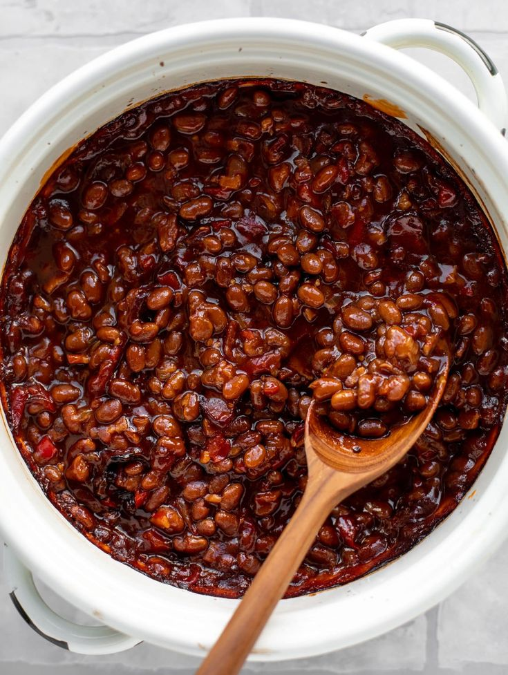

Beans Recipe

Ingredients:
- 2 cups black-eyed peas or brown beans
- 1/4 cup palm oil or vegetable oil
- 1 large onion, chopped
- 2 cloves garlic, minced
- 1 teaspoon ground crayfish (optional)
- 1-2 Scotch bonnet peppers, chopped (adjust to taste)
- 2 cups water or broth
- Salt and pepper to taste
- Optional: chopped spinach or ugu leaves for added nutrition
Steps/Instructions:
- Rinse the beans thoroughly and soak them in water for at least 4 hours or overnight to reduce cooking time. Drain before cooking.
- In a large pot, heat the palm oil or vegetable oil over medium heat. Add the chopped onions and sauté until translucent.
- Add the minced garlic and cook for another minute until fragrant.
- Add the soaked and drained beans to the pot. Stir to combine with the onions and garlic.
- Add the ground crayfish (if using) and chopped Scotch bonnet peppers. Stir well.
- Pour in the water or broth, ensuring the beans are fully covered. Bring to a boil.
- Reduce the heat to low, cover the pot, and let it simmer for about 1 to 1.5 hours, or until the beans are tender. Stir occasionally and add more water if necessary.
- Once the beans are cooked, season with salt and pepper to taste. If desired, stir in chopped spinach or ugu leaves and cook for an additional 5 minutes until wilted.
- Remove from heat and let it sit for a few minutes before serving. Enjoy with fried plantains, garri, or your favorite side dish.
Back to Home